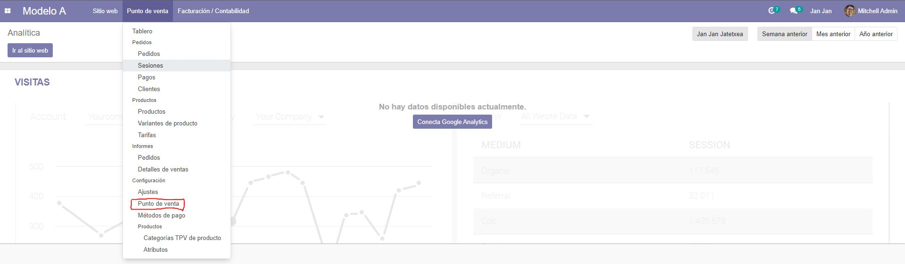
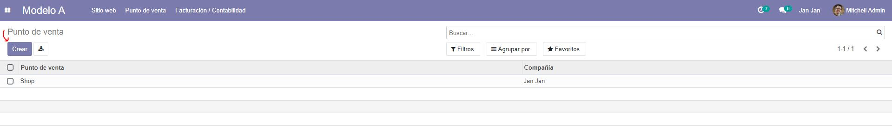
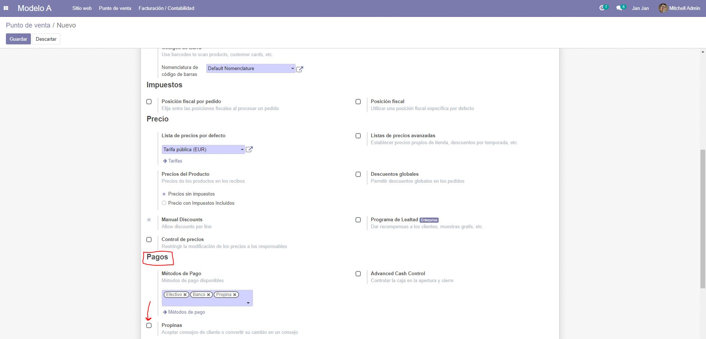
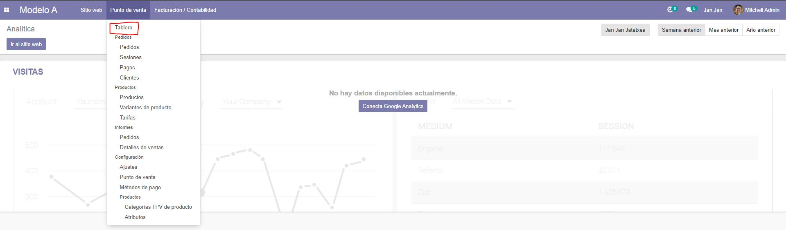
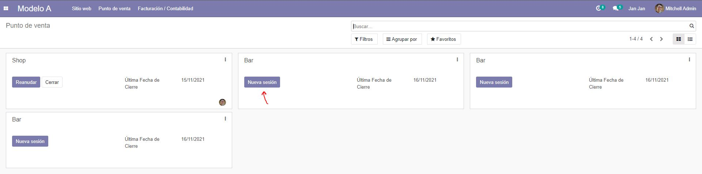
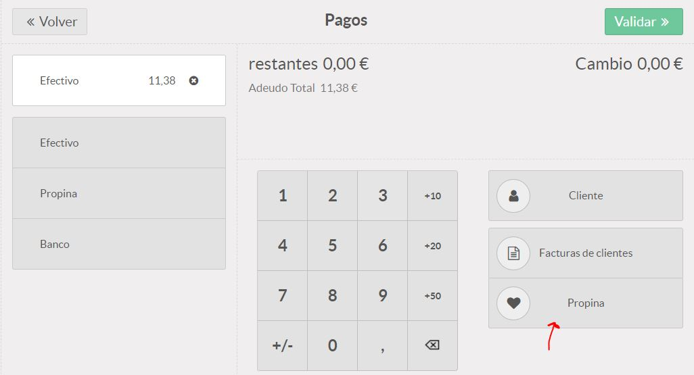

Para poder integrar propinas en el pago, previamente debemos haberlo asignado en el punto de venta.
Para ello dentro del menú de Punto de venta clickamos sobre Punto de venta.
Dentro podemos crear nuestro punto de venta o editarlo. Elegimos la opción que queramos, pero en este caso vamos a crear un punto de venta.
Dentro de la sección de Pagos encontramos la opción de Propinas así que asignamos el recuadro.
A la hora de realizar un pedido ahora ingresamos en Tablero dentro de Punto de venta.
Escogemos Bar como punto de venta o depende de cómo le hayamos llamado e iniciamos una Nueva sesión.
Al realizar un pedido en la ventana de pago ahora seleccionamos la Propina y añadimos el importe.
